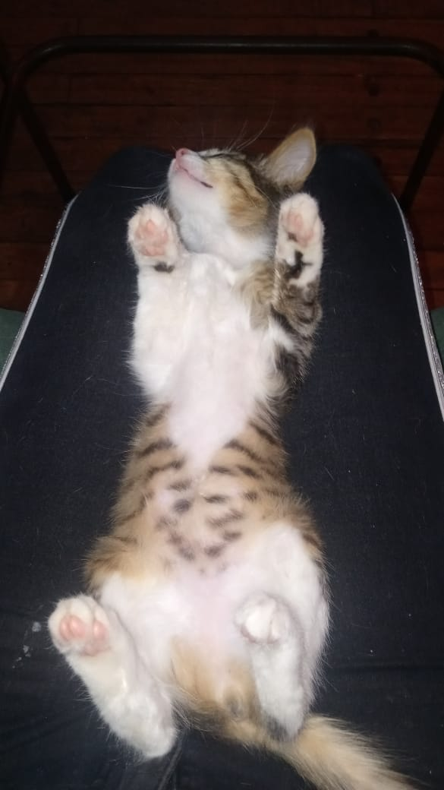

Todo inició con Nala, la cachorra de 4 meses que rescaté de la calle:
Al verla me enamoré inmediatamente, la traje a la casa, y todo cambió completamente. Ella me acompañaba, jugaba conmigo, me mordía, dormía en mi pecho. Me obsesioné, estaba my enamorada de ella. Tomaba fotos y videos en todo momento.
Por aquí dejo algunos de mis videos favoritos de cuando era bebé:
Algunas de las fotos aquí, son mis favoritas, las que demuestran su esencia, y su belleza: